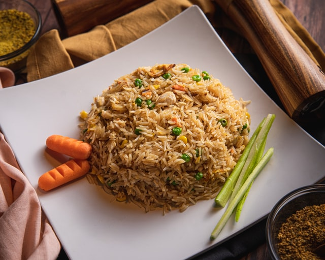

My Simple Recipes for Jollof rice
The jollof rice is a typical dish that everyone loves to eat especially in West Africa.

Ingredients
There are different types of ingredients that people use to prepare jollof rice but the basic ones are:
- long grain rice
- tomato paste
- vegetable oil
- chicken
- carrot
- green peas
- onions
- pepper
- seasoning cubes
- salt
Preparation
Please click here to see the procedure to prepare Nigerian jollof rice.